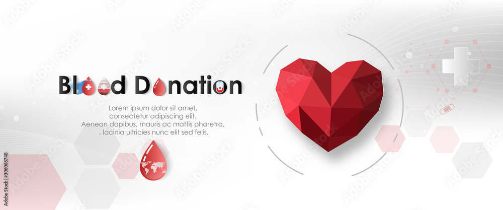
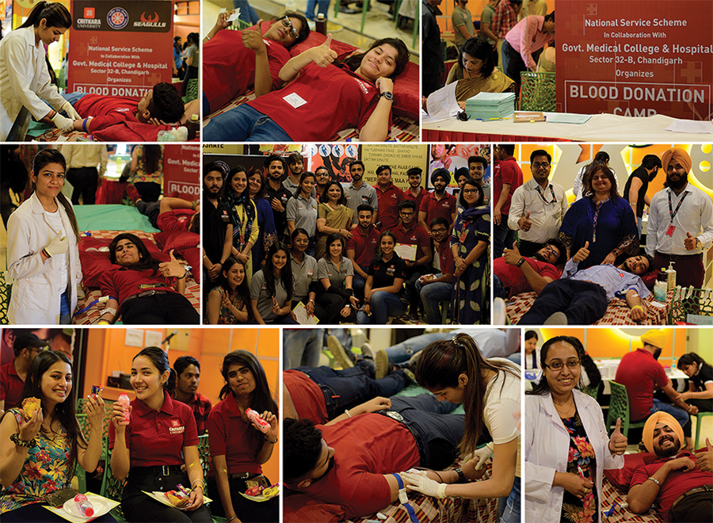
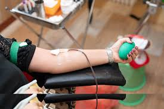

Today in the developed world, most blood donors are unpaid volunteers who donate blood for a community supply. In some countries, established supplies are limited and donors usually give blood when family or friends need a transfusion . Many donors donate for several reasons, such as a form of charity, general awareness regarding the demand for blood, increased confidence in oneself, helping a personal friend or relative, and social pressure. Despite the many reasons thatpeople donate, not enough potential donors actively donate. However, this is reversed during disasters when blood donations increase, often creating an excess supply
next →


Blood transfusion saves lives and improves health, but many patients requiring transfusion do not have timely access to safe blood. Providing safe and adequate blood should be an integral part of every country's national health care policy and infrastructure.